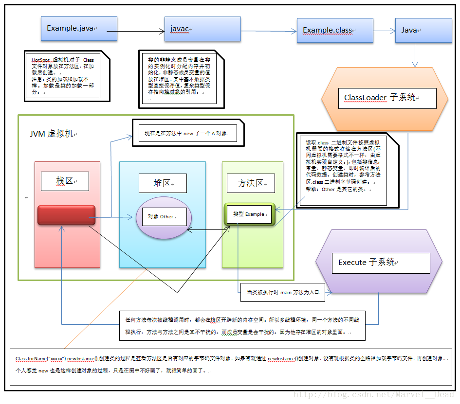
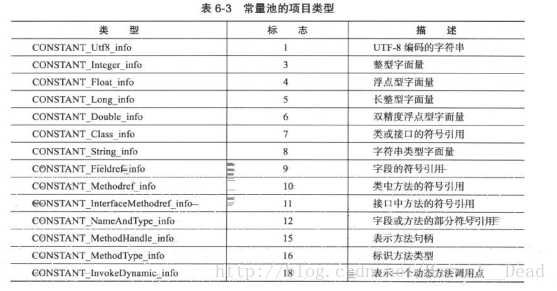

静态方法与非静态方法的区别¶
你得先分清楚运行时分为静态的“程序指令”和动态的“数据”，
数据又分为动态分配在堆上的，和函数调用时栈上的局部变量。
我知道静态变量的使用要很小心，因为它在每个对象中是共享的。但是对于静态方法我的认识只局限于下面：
我知道静态变量的使用要很小心，因为它在每个对象中是共享的。但是对于静态方法我的认识只局限于下面：
● 生命周期（Lifecycle）：
静态方法（Static Method）与静态成员变量一样，属于类本身，在类装载的时候被装载到内存（Memory），不自动进行销毁，会一直存在于内存中，直到JVM关闭。
非静态方法（Non-Static Method）又叫实例化方法，属于实例对象，实例化后才会分配内存，必须通过类的实例来引用。不会常驻内存，当实例对象被JVM 回收之后，也跟着消失。 (堆中？)
● 效率
静态方法的使用效率比非静态方法的效率高。
按照上面的概念，只要内存够用，都可以使用静态的。使用静态方法会带来什么问题呢
● 线程安全
静态方法是共享代码段，静态变量是共享数据段。既然是“共享”就有并发（Concurrence）的问题。
非静态方法是针对确定的一个对象的，所以不会存在线程安全的问题。
静态成员变量和静态成员方法¶

如果是一个类里面的 静态成员变量和静态成员方法 ，它是存储在方法区的，
静态成员变量是在方法区的静态域里面， 而静态成员方法是在方法区的class二进制信息里面(.class文件和方法区里面的二进制信息不一样，读取.class文件按照虚拟机需要的格式存储在方法区。这种格式包括数据结构方面)，
静态成员和静态成员方法使用时不用创建对象，即类加载初始化后就可以使用，并且是线程共享的。
通过图中分析，很多问题也能够迎刃而解，比如不同线程调用方法为什么是线程安全的。局部变量存储在哪儿里(栈中)，成员变量存储在哪儿里(静态成员变量存储在方法区，非静态成员变量存储在堆区)，为什么局部变量不能够static修饰等(局部变量存储在栈区，在方法调用时不能够自动初始化必须由程序员手动初始化，否则会报错，归根结底是由于static变量和局部变量存储的位置不一样。)。
下面给大家看一个Java代码例子：
声明一个类：
public class A {
public final String tempString="world";//这里可以把final去掉，结果等同！！
public final char[] charArray="Hello".toCharArray();
public char[] getCharArray() {
return charArray;
}
public String getTempString() {
return tempString;
}
}
创建测试类：
public class TestA {
public static void main(String[] args) {
A a1=new A();
A a2=new A();
System.out.println(a1.charArray==a2.charArray); // false
System.out.println(a1.tempString==a2.tempString); // true 如果多个线程去访问A类中的String字符串，每次都会到常量区中去找该字符序列的引用。
}
}
那么为什么final类型的字符数组就不为true了呢？？
申明(不管是通过new还是通过直接写一个数组)一个数组其实在Java中就等同创建了一个对象，即每次创建类的对象都会自动创建一个新的数组空间。
其中要注意的是：常量池中存储字符数组只是存储的是每个字符或者字符串。
为了证明每次获取的final数组地址不一样，并且数组中的字符都会存储在常量池中，我们需要参考另外一个代码：
public class A {
public String tempString="world";
public final String tempStringArray[]={"Fire","Lang"};
public final char[] charArray={'h','e','l','l','o'};
public Character charx='l';
public char[] getCharArray() {
return charArray;
}
public String getTempString() {
return tempString;
}
public String[] getTempStringArray() {
return tempStringArray;
}
public Character getCharx() {
return charx;
}
}
测试代码：
public class TestA {
public static void main(String[] args) {
A a1=new A();
A a2=new A();
System.out.println(a1.tempString==a2.tempString);
System.out.println(a1.tempStringArray==a2.tempStringArray);//看这里
System.out.println("#####################");//看这里
System.out.println(a1.tempStringArray[0]==a2.tempStringArray[0]);
System.out.println(a1.tempStringArray[0]=="Fire");
System.out.println("#####################");
System.out.println(a1.charArray==a2.charArray);
System.out.println(a1.charx==a2.charx);
}
}
返回结果
true
false
#####################
true
true
#####################
false
true
可以看到每次输出的final数组地址都不一样，最重要的是String类型的数组地址也都不一样！！但是String类型数组中的每个字符串都存储在常量池中。
所以可以肯定的是字符串和其它能够确定值的final字面量值是存储在常量池的！！并且在方法区内存中只有一份！！与所有线程共享访问！！
常量池存储的项目类型：
静态方法和实例化方法(非静态方法)¶
有时候我们对静态方法和实例化方法会有一些误解。
1、大家都以为“ 静态方法常驻内存，实例方法不是，所以静态方法效率高但占内存。”
事实上，他们都是一样的，在加载时机和占用内存上，静态方法和实例方法是一样的，在类型第一次被使用时加载。调用的速度基本上没有差别。
**2、大家都以为“ 静态方法在堆上分配内存，实例方法在堆栈上” **
事实上所有的方法都不可能在堆或者堆栈上分配内存，
方法作为代码是被加载到特殊的代码内存区域，这个内存区域是不可写的。 方法占不占用更多内存，和它是不是static没什么关系。
因为字段是用来存储每个实例对象的信息的，所以字段会占有内存，并且因为每个实例对象的状态都不一致（至少不能认为它们是一致的），所以每个实例对象的所有字段都会在内存中有一分拷贝，也因为这样你才能用它们来区分你现在操作的是哪个对象。
但方法不一样，不论有多少个实例对象，它的方法的代码都是一样的，所以只要有一份代码就够了。因此无论是static还是non-static的方法，都只存在一份代码，也就是只占用一份内存空间。 同样的代码，为什么运行起来表现却不一样？这就依赖于方法所用的数据了。主要有两种数据来源，一种就是通过方法的参数传进来，另一种就是使用class的成员变量的值……
**3、大家都以为“实例方法需要先创建实例才可以调用，比较麻烦，静态方法不用，比较简单” **
事实上如果一个方法与他所在类的实例对象无关，那么它就应该是静态的，而不应该把它写成实例方法。所以所有的实例方法都与实例有关，既然与实例有关，那么创建实例就是必然的步骤，没有麻烦简单一说。
当然你完全可以把所有的实例方法都写成静态的，将实例作为参数传入即可，一般情况下可能不会出什么问题。
从面向对象的角度上来说，在抉择使用实例化方法或静态方法时，应该根据是否该方法和实例化对象具有 逻辑上的相关性，如果是就应该使用实例化对象 反之使用静态方法。这只是从面向对象角度上来说的。
如果从线程安全、性能、兼容性上来看 也是选用实例化方法为宜。
我们为什么要把方法区分为：静态方法和实例化方法 ？
如果我们继续深入研究的话，就要脱离技术谈理论了。早期的结构化编程，几乎所有的方法都是“静态方法”，引入实例化方法概念是面向对象概念出现以后的事情了，区分静态方法和实例化方法不能单单从性能上去理解，创建c++,java,c#这样面向对象语言的大师引入实例化方法一定不是要解决什么性能、内存的问题，而是为了让开发更加模式化、面向对象化。这样说的话，静态方法和实例化方式的区分是为了解决模式的问题。
拿别人一个例子说事：
比如说“人”这个类，每个人都有姓名、年龄、性别、身高等，这些属性就应该是非静态的，因为每个人都的这些属性都不相同；但人在生物学上属于哪个门哪个纲哪个目等，这个属性是属于整个人类，所以就应该是静态的——它不依赖与某个特定的人，不会有某个人是“脊椎动物门哺乳动物纲灵长目”而某个人却是“偶蹄目”的。
java中静态方法和非静态方法的存储¶
将某 class 产生出一个 instance 之后，此 class 所有的 instance field 都会新增一份，那么所有的 instance method 是否也会新增一份？答案是不会，我们用field表示字段，用method表示方法，那么加上static区分后就 有四种：
- class field：有用static修饰的field
- class method：有用static修饰的method
- instance field：没有用static修饰的field
- instance method：没有用static修饰的method
那么他们在内存中的表示为：
- class field：共用一块记忆体
- class method：共用一块记忆体
- instance field：随着每个instance各有一块记忆体
- instance method：共用一块记忆体
如果instance method也随着instance增加而增加的话，那内存消耗也太大了，为了做到共用一小段内存，Java 是根据this关键字做到的，比如：
instance1.instanceMethod();
instance2.instanceMethod();
在传递给对象参数的时候，Java 编译器自动先加上了一个this参数，它表示传递的是这个对象引用，虽然他们两个对象共用一个方法，但是他们的方法中所产生的数据是私有的，这是因为参数被传进来变成call stack内的entry，而各个对象都有不同call stack，所以不会混淆。其实调用每个非static方法时，Java 编译器都会自动的先加上当前调用此方法对象的参数，有时候在一个方法调用另一个方法，这时可以不用在前面加上this的，因为要传递的对象参数就是当前执行这个方法的对象。
为什么静态方法中不能调用非静态方法？这是因为静态方法直接跟class相关，调用此方法的时候是类直接调用的，而不是对象，所以Java 编译器就没有对象参数可以传递，这样，如果你在静态方法内部调用非静态方法，那么Java 编译器怎么判断这个非静态方法是哪个对象调用的？对吧，所以Java 编译器就会报错，但是也不是绝对的，Java 编译器是隐式的传递对象参数，那么我们总可以显示的传递对象参数吧，如果我们把某个对象的引用传递到static方法里，然后通过这个引用就可以调用非静态方法和访问非静态数据成员了。